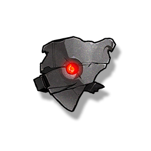

Mask of Constraint
Development Materials

Used for weapon breakthrough, Resonator ascension, and skill upgrade.
A mask worn by the new members of the Fractsidus, it seems to be used to suppress the rejection reaction of the Tacet Discord components in the body, and the side effect is that normal human emotions are also suppressed. Perhaps, this is also one of the designer's intentions?